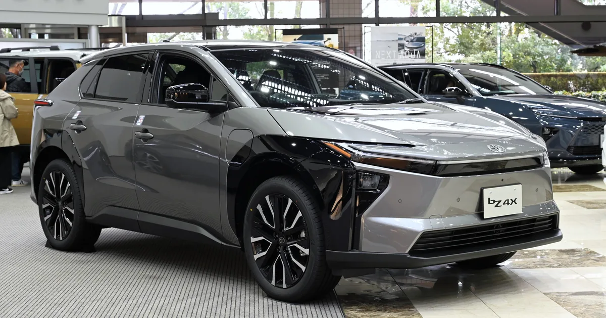
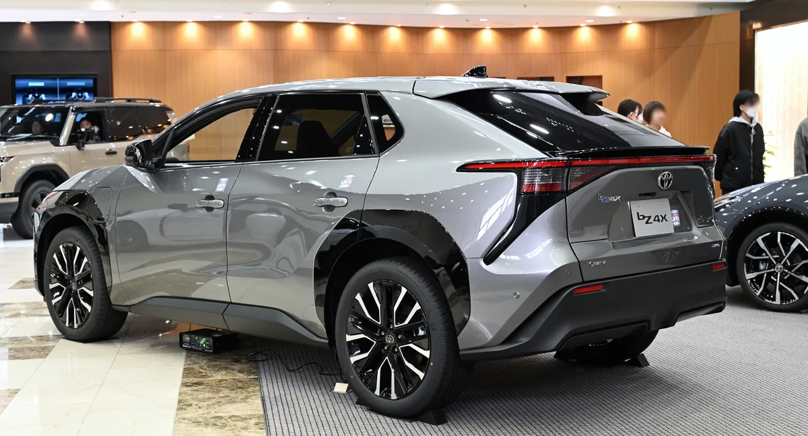

▲ 토요타의 전기 SUV가 이름에서 4X를 떼고 bZ로 돌아왔다 ⓒ Alexander Migl, Wikimedia Commons (CC BY-SA 4.0)
토요타의 첫 전용 전기차 이름은 'bZ4X'였습니다. 읽기도 어렵고 기억하기도 어려운 이름이었습니다.
2027년형에서는 'bZ'입니다. 뒤의 4X가 빠졌습니다.
그런데 실제로 중요한 변화는 이름이 아니라 충전구에 있습니다. NACS 포트가 기본 내장됩니다.
1. 트림별 가격과 주행거리
미국 기준 5개 트림 구성입니다. 가격은 배송비 1,595달러를 제외한 값입니다. 괄호 안은 환율 1,412원 기준 단순 환산액으로, 세금과 국내 판매가와는 무관합니다.
| 트림 | 배터리 | 주행거리 | 가격 |
|---|---|---|---|
| XLE FWD | 57.7kWh | 236마일 | $34,980 (약 4,940만 원) |
| XLE FWD Plus | 74.7kWh | 314마일 | $37,980 (약 5,360만 원) |
| XLE AWD | 74.7kWh | 288마일 | $39,980 (약 5,650만 원) |
| Limited FWD | 74.7kWh | 299마일 | $43,380 (약 6,130만 원) |
| Limited AWD | 74.7kWh | 278마일 | $45,380 (약 6,410만 원) |
가격 대비 효율이 가장 좋은 조합은 XLE FWD Plus입니다. 기본형보다 3,000달러 더 내고 주행거리가 78마일(약 125km) 늘어납니다.
반면 리미티드 트림은 주행거리가 오히려 짧습니다. 같은 74.7kWh 배터리인데 314마일에서 299마일로 줄어듭니다. 휠 크기와 편의 장비 추가에 따른 무게·공력 손실 때문입니다.
사륜을 고르면 손실이 더 큽니다. XLE 기준 314마일 → 288마일, 리미티드 기준 299마일 → 278마일입니다.

▲ 사륜구동을 고르면 주행거리는 26마일가량 줄어든다. 대신 합산 출력이 338마력이 된다 ⓒ TTTNIS, Wikimedia Commons (CC0)
2. NACS 내장이 실제로 바꾸는 것
이번 변화의 핵심입니다. bZ에는 NACS 포트가 차량에 직접 내장됩니다.
어댑터와 무엇이 다른가. 최근 여러 브랜드가 "테슬라 슈퍼차저를 쓸 수 있다"고 밝혔지만, 대부분 어댑터를 끼우는 방식이었습니다.
- 어댑터 방식 — 별도 부품을 챙겨야 하고, 잃어버리면 못 쓴다. 접점이 하나 더 생겨 발열과 손실이 늘 수 있다.
- 포트 내장 — 케이블을 바로 꽂는다. 슈퍼차저 주차 배치와 케이블 길이에도 맞는다.
두 번째 항목이 의외로 큽니다. 테슬라 슈퍼차저는 차량 왼쪽 뒤에 충전구가 있다는 전제로 주차 구획과 케이블 길이가 설계돼 있습니다. 충전구 위치가 다른 차는 두 자리를 차지하거나 케이블이 닿지 않는 상황이 생깁니다.
여기에 배터리 예열(프리컨디셔닝) 기능이 함께 들어갑니다. 추운 날씨에 충전소로 향할 때 배터리를 미리 데워, 급속 충전 속도가 떨어지는 것을 막는 기능입니다. 10%에서 80%까지 약 30분이라는 수치는 이 기능이 정상 작동할 때의 값에 가깝습니다.

▲ 어댑터 방식과 달리 포트 내장은 접점이 하나 줄고, 슈퍼차저의 케이블 길이·주차 배치와도 맞는다
3. 실내와 편의 사양
실내에서 바뀐 항목은 이렇습니다.
- 14인치 디스플레이 — 기존 대비 크기를 키웠다
- 무선 애플 카플레이·안드로이드 오토 — 케이블 없이 연결된다
- 디지털 키 — 스마트폰으로 차량을 열고 시동을 건다
디지털 키는 편의 기능이자 관리 항목이기도 합니다. 스마트폰 배터리가 방전되면 접근이 막히는 경우가 있어, 물리 키 백업을 어떻게 제공하는지를 확인하는 편이 좋습니다.

▲ 배터리 예열 기능이 정상 작동할 때 10%에서 80%까지 약 30분이 걸린다
토요타는 2026년형에서 이미 한 차례 손을 봤습니다. 주행거리를 늘리고, 출력을 키우고, 실내 마감을 정리하고, NACS 포트를 추가한 개선이었습니다. 2027년형은 그 연장선에 있습니다.

▲ 2026년형에서 주행거리·출력·실내·NACS 포트가 한 차례 정리됐고, 2027년형은 그 연장선에 있다 ⓒ TTTNIS, Wikimedia Commons (CC0)
4. 국내 시장에서 읽는 법
이 차는 미국 시장 발표입니다. 국내 사양과 가격은 별도이며, 그대로 옮겨 계산하면 어긋납니다.
그럼에도 참고할 지점은 있습니다.
- 가격대 — 3만4,980달러는 환율 1,412원 기준 약 4,940만 원이다. 단순 환산만 놓고 보면 국내 보조금 100% 구간(5,300만 원 미만) 언저리지만, 관세·물류·인증 비용이 붙으면 구간이 바뀔 수 있다
- 주행거리 기준 차이 — 미국은 EPA, 국내는 산업부·환경부 복합 기준이다. 국내 인증 수치는 통상 더 짧게 나온다
- 충전 규격 — 국내는 DC 콤보가 주류다. NACS 내장은 국내에서 곧바로 이점이 되지 않는다
세 번째 항목이 중요합니다. 국내에서도 NACS 커넥터가 늘고 있지만, 고속도로 휴게소 기준으로도 아직 167기 수준입니다. 미국에서의 장점이 국내에서 같은 크기로 작동하지는 않습니다.
5. 정리
2027년형 토요타 bZ가 미국에서 판매를 시작했습니다. XLE FWD 3만4,980달러부터 리미티드 AWD 4만5,380달러까지 5개 트림이며, 배송비 1,595달러는 별도입니다.
배터리는 57.7kWh와 74.7kWh 두 종류이고, 최대 주행거리는 314마일입니다. 출력은 FWD 165마력 또는 221마력, AWD 합산 338마력입니다.
NACS 포트를 기본 내장해 어댑터 없이 테슬라 슈퍼차저를 쓸 수 있고, 10%에서 80%까지 약 30분이 걸립니다. 국내 사양과 가격은 별도이며 주행거리 인증 기준도 다릅니다.